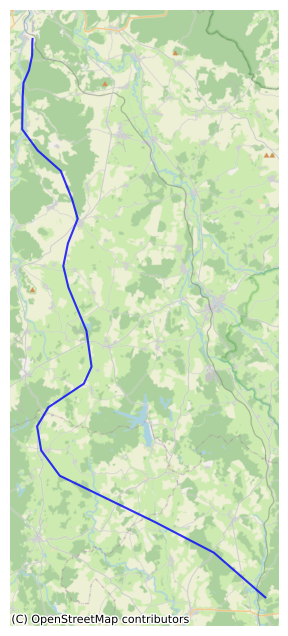
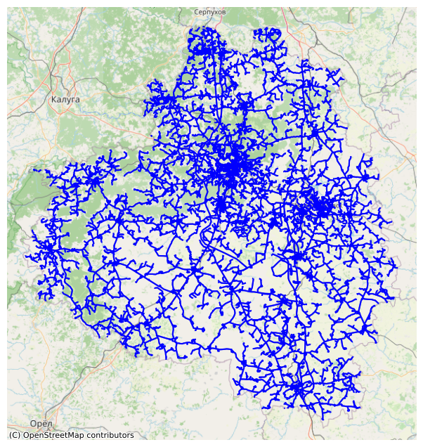
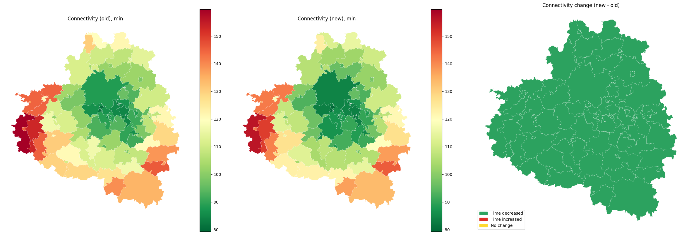

Adding roads to the graph
[1]:
import geopandas as gpd
import os
os.getcwd()
import pickle
Initialization
[2]:
local_crs = 32637 # Tula region crs
The graph can be obtained by transport_frames.graph.get_graph()
[3]:
with open("data/G_drive.pickle", "rb") as f:
G_drive = pickle.load(f)
[4]:
from transport_frames.utils.helper_funcs import plot_graph
plot_graph(G_drive)

Load a file with the roads to add. They must contain ref_type and reg parameter
[5]:
new_roads = gpd.read_file("data/new_road_tula_region.geojson")
new_roads
[5]:
| maxspeed | highway | ref | reg | node_start | node_end | geometry | |
|---|---|---|---|---|---|---|---|
| 0 | 1000.0 | None | None | 1 | None | None | LINESTRING (390444.88 6012584.465, 390410.011 ... |
[6]:
plot_graph(edges = new_roads)

Road addition
[7]:
from transport_frames.road_adder import add_roads
new_road_graph = add_roads(G_drive, new_roads, local_crs)
[8]:
plot_graph(new_road_graph)

Check connectivity improvement
To see difference in travel time with new roads
[9]:
settlement_points = gpd.read_file("data/tula_region_towns.geojson")
settlement_polygons = gpd.read_file("data/tula_region_municipalities.geojson")
[10]:
from transport_frames.indicators import get_connectivity
con_old = get_connectivity(settlement_points,settlement_polygons,local_crs,graph = G_drive)
con_old.head()
2026-04-05 00:26:17.418 | WARNING | Removing 197 nodes from 22 smaller strongly connected components. These are subgraphs where nodes are internally reachable but isolated from the rest. Retaining only the largest strongly connected component (31927 nodes).
[10]:
| name | geometry | connectivity | |
|---|---|---|---|
| 0 | Манаенское | POLYGON ((36.27046 53.67571, 36.27343 53.67505... | 145.007980 |
| 1 | Астаповское | POLYGON ((36.47061 53.63576, 36.48947 53.63114... | 130.750246 |
| 2 | Арсеньево | POLYGON ((36.63005 53.72754, 36.63174 53.72702... | 118.799943 |
| 3 | Левобережное | POLYGON ((35.89856 53.85018, 35.90015 53.84679... | 159.656568 |
| 4 | Правобережное | POLYGON ((36.1455 53.80533, 36.14561 53.80468,... | 153.267224 |
[11]:
con_new = get_connectivity(settlement_points,settlement_polygons,local_crs,graph = new_road_graph)
con_new.head()
2026-04-05 00:26:37.405 | WARNING | Removing 197 nodes from 22 smaller strongly connected components. These are subgraphs where nodes are internally reachable but isolated from the rest. Retaining only the largest strongly connected component (31940 nodes).
[11]:
| name | geometry | connectivity | |
|---|---|---|---|
| 0 | Манаенское | POLYGON ((36.27046 53.67571, 36.27343 53.67505... | 140.871501 |
| 1 | Астаповское | POLYGON ((36.47061 53.63576, 36.48947 53.63114... | 126.899580 |
| 2 | Арсеньево | POLYGON ((36.63005 53.72754, 36.63174 53.72702... | 115.505683 |
| 3 | Левобережное | POLYGON ((35.89856 53.85018, 35.90015 53.84679... | 156.128797 |
| 4 | Правобережное | POLYGON ((36.1455 53.80533, 36.14561 53.80468,... | 149.911153 |
[12]:
import numpy as np
import matplotlib.pyplot as plt
import matplotlib.patches as mpatches
cmp = con_old[["geometry", "connectivity"]].rename(
columns={"connectivity": "connectivity_old"}
).join(
con_new[["connectivity"]].rename(columns={"connectivity": "connectivity_new"}),
how="inner",
)
cmp["delta"] = cmp["connectivity_new"] - cmp["connectivity_old"]
eps = 1e-9
cmp["change"] = np.select(
[cmp["delta"] < -eps, cmp["delta"] > eps],
["decreased", "increased"],
default="unchanged",
)
vmin = min(cmp["connectivity_old"].min(), cmp["connectivity_new"].min())
vmax = max(cmp["connectivity_old"].max(), cmp["connectivity_new"].max())
fig, ax = plt.subplots(1, 3, figsize=(24, 8))
cmp.plot(
column="connectivity_old",
cmap="RdYlGn_r",
legend=True,
linewidth=0.2,
edgecolor="white",
vmin=vmin,
vmax=vmax,
ax=ax[0],
aspect="auto",
)
ax[0].set_title("Connectivity (old), min")
ax[0].set_axis_off()
cmp.plot(
column="connectivity_new",
cmap="RdYlGn_r",
legend=True,
linewidth=0.2,
edgecolor="white",
vmin=vmin,
vmax=vmax,
ax=ax[1],
aspect="auto",
)
ax[1].set_title("Connectivity (new), min")
ax[1].set_axis_off()
color_map = {
"decreased": "#2ca25f",
"increased": "#de2d26",
"unchanged": "#ffd92f",
}
for cls, color in color_map.items():
part = cmp[cmp["change"] == cls]
if part.empty:
continue
part.plot(
color=color,
linewidth=0.2,
edgecolor="white",
ax=ax[2],
aspect="auto",
)
ax[2].set_title("Connectivity change (new - old)")
ax[2].set_axis_off()
ax[2].legend(
handles=[
mpatches.Patch(color=color_map["decreased"], label="Time decreased"),
mpatches.Patch(color=color_map["increased"], label="Time increased"),
mpatches.Patch(color=color_map["unchanged"], label="No change"),
],
loc="lower left",
)
plt.tight_layout()
